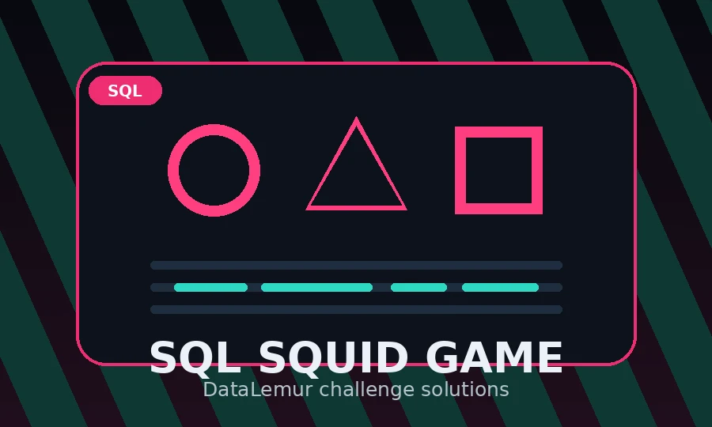

Side projects
A growing collection of ideas, tools, and experiments
Linear Algebra
Concepts, matrix operations, decompositions and numerical methods, with formulas, worked examples and derivations.
Numerical Methods
Derivatives, interpolation, root finding, numerical integration and differential equations, with derivations and worked examples.
Statistics
Statistical inference, sampling, estimation, uncertainty and statistical methods, with worked examples and derivations.
Linear Regression
Linear models, OLS, model assumptions, training, diagnostics, regularization and Bayesian regression, with derivations and examples.
Time Series Analysis
Trend and seasonal decomposition, correlation, stationarity, ARIMA, ARCH and GARCH models, with equations and examples.
SQL Field Notes
A searchable SQL and pandas reference with worked queries, method examples, SQL Murder City and SQL Squid Game solutions.

SQL Squid Game
SQL puzzles inspired by the Squid Game challenge
Query through each round and compare with my solutions